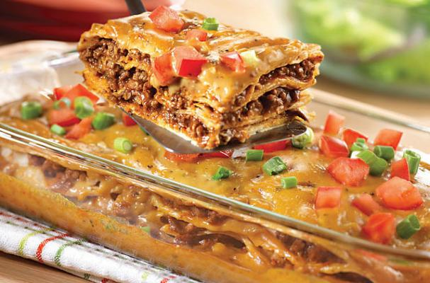

Capper's Farmer Mexican Lasagna Recipe
Mexican lasagna casserole is a familiar favorite infused with robust flavors.

Ingredients
1 can (10.75 ounces) condensed cheddar cheese soup
1/4 cup milk
1 package (1 ounce) fajita seasoning mix, divided
1 pound ground beef
1 can (10.75 ounces) condensed golden mushroom soup
1/2 cup water
1 tablespoon chili powder
1 1/2 teaspoons crushed dried oregano leaves
12 (5- to 6-inch diameter) corn tortillas
Chopped tomatoes, optional
Sliced green onions, optional
Cooking Instructions
1. In medium bowl, stir together cheddar cheese soup, milk and half the fajita seasoning, mixing until mixture is
smooth.
2. In skillet over medium-high heat, cook ground beef, crumbling with fork, until browned. Pour off any fat.
3. Stir mushroom soup, water, chili powder, oregano and remaining fajita seasoning into ground beef, mixing
well.
4. Increase heat and bring mixture to a boil. Reduce heat to low and continue cooking for 5 minutes.
5. Remove skillet from heat.
6. Place 3 tortillas in bottom of a shallow, 2-quart baking dish, overlapping slightly and covering bottom as much
as possible.
7. Spread 1 cup beef mixture over tortillas in dish. Add another layer of 3 tortillas and another cup of beef
mixture. Repeat layers with 3 more tortillas and another cup of beef.
8. Top with remaining tortillas. Spread cheese soup mixture over tortillas. Serve and enjoy! Yields 6.
About the Recipe
With a few key ingredients, you and your family can experience a taste of Latin America right in your own kitchen or
dining room.
Using condensed soups makes a creamy Mexican lasagna casserole packed full of flavor.
Try this updated twist on an American favorite, and see for yourself that easy Mexican lasagna is as simple as it is
delicious.
Check out the link below to view the recipe on foodista!